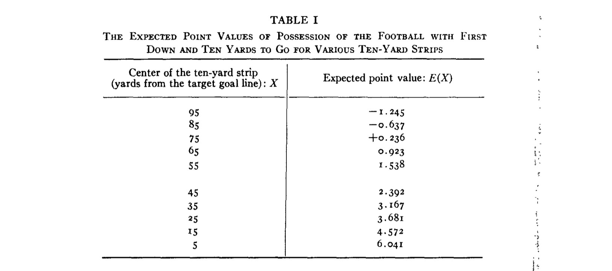

The Data You Don’t Have
Where is the value in data science?
Data Scientist
AE Business Solutions
Background
“For a decade now, [the role of] Data Scientist has been in the spotlight. AI experts had salaries that rivaled those of sports superstars.
In the search for fame and fortune, hundreds of young professionals entered into what seemed a frenetic golden rush… Whole new industries sprang around the hype.
Consulting specialists promised millions if your company could unlock the potential of data.
AI, or Machine Learning, has been called the new electricity and data, the new oil.”1
But there’s a problem.
Is all of this investment in data science actually worth anything?
Most organizations want to advance their capabilities in DS/ML/AI.
At the same, most organizations struggle to find value from them.
In my humble estimation, I think this is because they are looking for value in the wrong places.
“During all of this time…
- economists were trying to answer what is the true impact of education on one’s earnings
- biostatisticians were trying to understand if saturated fat led to a higher chance of a heart attack
- psychologists were trying to understand if words of affirmation led indeed to a happier marriage.
We forgot about those who have been doing “old-fashioned” science with data all along.”1
What, really, is the value of data science?
The value of data science is simply that of science - it is the process by which we try to understand the world around us.
It allows us to discover cause and effect; it allows us to measure things we care about. It helps us understand the data we have and the data that we don’t.
To illustrate, I want to tell you two stories of “old fashioned” data science in action.
These stories involve two very different, yet related topics.
The second story is about an important topic that affects us all, something that weighs on us everyday and affects the physical well-being of ourselves and our loved ones: college football.
The first story is about heart disease.
1) What causes cardiovascular failure?
Have you ever gone to the doctor and received your ten-year cardiovascular risk score?
Have you ever wondered where that score comes from?
Would you have guessed that it had something to do with Franklin Delano Roosevelt?
President Roosevelt died on April 12, 1945, at the age of 63, from cerebral hemorrhage with a blood pressure of 300/190 mmHg.
By the 1940s, cardiovascular disease had become the number one cause of mortality among Americans, accounting for 1 in 2 deaths.
At this time, almost nothing was known about the causes of heart failure.
Prevention and treatment were so poorly understood that most Americans accepted early death from heart disease as unavoidable.
To illustrate:
In 1932, candidate Roosevelt’s campaign office released medical records showing his blood pressure to be 140/100 mmHg, which did not prompt any medical intervention.
By 1941, the President experienced a gradual rise in blood pressure to 188/105 mmHg.
In March 1944, Dr. Bruenn noted that the patient appeared “slightly cyanotic” with blood pressure of 186/108 mmHg.
A month after coming under Dr. Bruenn’s care, Roosevelt’s blood pressure had risen to 240/130 mmHg.
FDR’s death in April of 1945 prompted a national call for the study of cardiovascular disease.
On June 16, 1948, President Harry Truman signed into law the National Heart Act.
This law approved a twenty-year epidemiological heart study and established the National Heart Institute.
This study was the brainchild of Joseph Mountin, a physician from Hartford, Wisconsin.
How do you determine the causes of long term heart risk?
Joseph Mountin recognized that the problem demanded a long term study; collecting the necessary data.
“Observations of population characteristics must be made well before disease becomes overt if the relationship of these characteristics to the development of the disease is to be established with reasonable certainty.”
Mountin’s recommendation:
- Study a large group of people over a long period of time who had not yet developed overt symptoms of cardiovascular disease.
- Collect data on every individual at the start of the study and during regularly scheduled follow-ups.
- Observe them. Eventually, some of the individuals would experience cardiovascular disease.
- Examine the relationship between data collected at the beginning of the study and the onset of the disease.
So that is what they decided to do.
The town of Framingham, Massachusetts was chosen as the location for the study.
The town of Framingham, Massachusetts was chosen as the location for the study.
The one-time farming community was now a factory town of 28,000 middle-class residents of predominantly European origin… and was “therefore considered to be representative of the United States in the 1940s”.
What data did they choose to collect?
A committee of specialists had to speculate about the potential causes and develop a variety of hypotheses to guide their data collection.
They cast a pretty wide net in collecting data on individuals.
What did they find?
The first major findings were published in 1957, almost a decade after the initial participant was examined.
They found a nearly 4 fold increase in coronary heart disease incidence per 1000 persons among hypertensive participants (≥160/95 mmHg).
Much of what we know about the causes of heart disease (exercise, diet, smoking) was found in the years to come in the more than 3000 papers published using data from the Framingham Heart Study.
These findings form the basis of the Framingham Risk Score, a simple model for estimating long term risk of cardiovascular disease that is used to this day.
The Framingham study continues; it is now on its third generation of residents, examining the effects of family history and genetics.
Why am I telling you about this?
- The data you choose to collect, and not collect, is part of the scientific process.
- All of the technology in the world does not matter if you do not understand your problem and the data and methodology that would help you solve it.
The methods we use to understand something as simple as heart disease are the same ones we use to understand something far more serious: college football.
2) How do you measure a college football team?
Have you ever looked at pre-game betting lines and win probabilities for football games?
Have you ever wondered how they make these predictions? It might not be quite what you think.
Would you have guessed that it had something to do with a quarterback who played in the 1970s?
Virgil Carter was an NFL quarterback who played for the Bears and the Bengals in the 1970s.
While also being a quarterback in the NFL, Virgil Carter earned a Master’s degree from Northwestern and taught statistics and mathematics at Xavier University.
The focus of his research, naturally, was football.
How do you evaluate a football team?
Virgil Carter’s idea was to measure the value of individual plays in terms of expected points.
To illustrate: how many points is each of the following plays worth?


To answer questions like these, Virgial Carter manually collected play-by-play data from the entire 1969 NFL season.
He wanted to calculate the expected value of field position in terms of points.

Expected Points Before Play: 1.80
Expected Points After Play: 7.00
Expected Points Added: 5.20
Expected Points Before Play: 0.67
Expected Points After Play: 1.80
Expected Points Added: 1.13
Expected Points Before Play: 0.20
Expected Points After Play: -3.25
Expected Points Added: -3.45
Note: these estimates come not from Virgil Carter’s 1969 NFL Season, but my own expected points model trained on all college football plays from 2007-2019.

Virgil Carter’s idea forms the basis of modern football analytics and how we evaluate teams and players:
Good offenses generate points in expectation.
Good defenses prevent points in expectation.
How do you predict college football games?
You measure the efficiency of every team’s offense and defense based on every play that has occurred over the course of a season.1
You then use your team measurements to simulate the outcome of games.
Is that really how they do it?
I was working on my own series of models for evaluating teams and eventually decided to compare my work to that of ESPN and Vegas.
My end of year team ratings compared to the ESPN college football power index.
My spread vs opening spreads from providers throughout the 2024 season to date.

Betting lines for individual games are a little bit harder to crack; they are surely accounting for things that I (currently) am not, such as rest/injuries/travel.
Pre-game simulations of Wisconsin @ USC. I felt slightly bad about nailing this one after that first half.
But, as with all predictive models, I don’t nail every prediction. Happily, Vegas and I were both quite wrong about Wisconsin @ Rutgers last week.
Beyond prediction, we can monitor team performance not by outcomes but on their underlying play.
And Wisconsin’s recent performances have provided some positive news (at least on defense).
My model still thinks Wisconsin’s pass/run offense is rather mediocre, but it likes the recent performances on defense.
Why am I telling you about this?
- Models are about more than just prediction; they enable us to make sense of patterns in data and measure things we care about.
- The best work and the best predictions tend to come from really trying to understand the thing you are predicting.
wrapping up
The value of data science is simply that of science - it is the process by which we understand the world around us.
It allows us to discover cause and effect; it allows us to measure things we care about. It helps us understand the data we have and the data that we don’t.
To recap:
The data you choose to collect, and not collect, is part of the scientific process.
All of the technology in the world does not matter if you do not understand your problem and the data and methodology that would help you solve it.
Models are about more than just prediction; they enable us to make sense of patterns in data and measure things we care about.
The best work and the best predictions tend to come from really trying to understand the thing you are predicting.
one final thought
There is no easy button; there is no tool that you can buy and start solving all of your problems.
The value in (data) science usually doesn’t come from algorithms, tools, platforms.
The value in (data) science is usually from the creativity/dedication/passion of asking questions and caring about finding the answer.
I don’t think data science is electricity or data the new oil. I think it’s something much simpler.
(Data) science is like farming.
It’s slow and difficult and takes a lot of patience.
But if you work at it and make an effort everyday, you will produce something valuable in the end.
thanks for listening
references
Mahmood, Syed S., et al. “The Framingham Heart Study and the epidemiology of cardiovascular disease: a historical perspective.” The lancet 383.9921 (2014): 999-1008.
Dawber, Thomas R., Gilcin F. Meadors, and Felix E. Moore Jr. “Epidemiological approaches to heart disease: the Framingham Study.” American Journal of Public Health and the Nations Health 41.3 (1951): 279-286.
Epidemiological Background and Design: The Framingham Heart Study
Carter, Virgil, and Robert E. Machol. “Operations research on football.” Operations Research 19.2 (1971): 541-544.